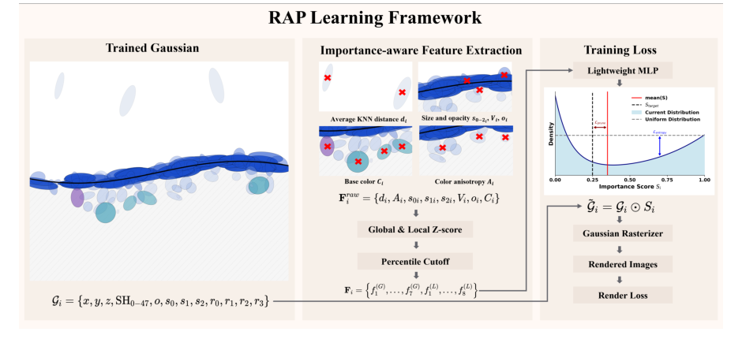
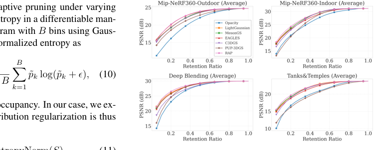
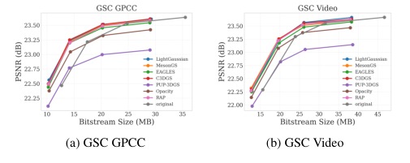

RAP
简单摘要
3D 高斯溅射 (3DGS) 已成为高质量 3D 场景重建的领先技术。然而，迭代细化和致密化过程导致生成大量基元，每个基元对重建的贡献程度截然不同。因此，估计原始重要性对于在重建过程中消除冗余以及实现有效的压缩和传输都是至关重要的。现有方法通常依赖于基于渲染的分析，其中每个基元通过其在多个相机视点的贡献来评估。然而，这些方法1）对视图的数量和选择敏感； 2）依赖专门的可微分光栅器； 3）计算时间长，且随着观看次数线性增长，使得它们难以集成为即插即用模块，并导致可扩展性和通用性有限。
为了解决这些问题，我们提出了 RAP——一种快速前馈的无渲染属性引导方法，用于在 3DGS 中进行有效的重要性评分预测。 RAP 直接从内在高斯属性和局部邻域统计数据推断原始重要性，避免任何基于渲染或依赖于可见性的计算。 A compact MLP is trained to predict per-primitive importance scores using a combination of rendering loss, pruning-aware loss, and significance distribution regularization loss.经过少量场景的训练后，RAP 可以有效泛化到未见过的数据，并可以无缝集成到重建、压缩和传输管道中，提供统一、高效的剪枝解决方案。
我们的代码公开于：https://github.com/yyyykf/RAP


简而言之，这篇论文关注的核心是：3D 高斯溅射 (3DGS) 已成为高质量 3D 场景重建的领先技术。然而，迭代细化和致密化过程导致生成大量基元，每个基元对重建的贡献程度截然不同。因此，估计原始重要性对于在重建过程中消除冗余以及实现有效的压缩和传输都是至关重要的。现有方法通常依赖于基于渲染的分析，其中每个基元通过其在多个相机视点…
3D 高斯泼溅 (3DGS) 最近已成为新颖视图合成的强大显式表示，可实现具有实时渲染效率的高保真度重建。尽管有其优势，3DGS 通常依赖于数百万个高斯图元来实现高保真渲染，这给存储和内存带来了巨大的负担。然而，这些基元以一种高度不平衡的方式对渲染质量做出贡献：这些基元中只有一小部分对渲染质量有价值，而很大一部分由于次优的致密化过程或不完整的训练而变得多余。因此，提出并采用基元重要性分数来选择基元并对其进行优先级排序，以进行差异化处理，例如修剪、压缩、细节层次渲染和传输。
例如，LightGaussian 和 PUP-3DGS 等先前的工作表明，由重要性分数引导的修剪可以在不牺牲保真度的情况下显着减少图元的数量。因此，提出一种准确、鲁棒、即插即用的重要性估计方法至关重要，作为 3DGS 多种实际应用中的模块化组件。现有的原始重要性估计方法可以大致分为三类：基于属性的方法、基于渲染的方法和基于学习的方法。 1）基于属性的启发式方法采用简单的规则，例如在优化期间分割大图元或丢弃不透明度低于阈值的图元。
虽然重量轻且独立于相机视点，但这些策略忽略了重叠图元之间复杂的混合交互，并且无法反映对渲染质量的真正贡献。 2）基于渲染的方法通过将高斯投影到多个视图上以测量其二维足迹或通过重建误差梯度评估扰动敏感性来估计原始显着性。这些方法提供了更高的精度，但本质上依赖于视图，对视图的数量和选择敏感，并且计算成本昂贵，因为时间成本随着视图计数线性增长。此外，它们需要专门的光栅化，限制了它们的模块化和可扩展性。 3）基于学习的方法联合优化可学习的分数掩模和场景重建。
尽管它们可以隐式地学习原始意义，但分数与特定的重建框架紧密耦合，因此缺乏通用性。而且，一旦场景被修改，预先计算的分数就会变得无效……
核心创新
综合引言与方法部分，这篇论文的核心创新可以概括为以下几方面：
1）问题定义与研究动机
3D 高斯泼溅 (3DGS) 最近已成为新颖视图合成的强大显式表示，可实现具有实时渲染效率的高保真度重建。尽管有其优势，3DGS 通常依赖于数百万个高斯图元来实现高保真渲染，这给存储和内存带来了巨大的负担。然而，这些基元以一种高度不平衡的方式对渲染质量做出贡献：这些基元中只有一小部分对渲染质量有价值，而很大一部分由于次优的致密化过程或不完整的训练而变得多余。因此，提出并采用基元重要性分数来选择基元并对其进行优先级排序，以进行差异化处理，例如修剪、压缩、细节层次渲染和传输。例如，LightGaussian 和 PUP-3DGS 等先前的工作表明，由重要性分数引导的修剪可以在不牺牲保真度的情况下显着减少图元的数量。因此，提出一种准确、鲁棒、即插即用的重要性估计方法至关重要，作为 3DGS 多种实际应用中的模块化组件。现有的原始重要性估计方法可以大致分为三类：基于属性的方法、基于渲染的方法和基于学习的方法。 1）基于属性的启发式方法采用简单的规则，例如在优化期间分割大图元或丢弃不透明度低于阈值的图元。虽然重量轻且独立于相机视点，但这些策略忽略了重叠图元之间复杂的混合交互，并且无法反映对渲染…
2）方法框架与核心模块
我们提出的 RAP 框架由两个阶段组成。首先，我们执行重要性感知特征提取，其中每个高斯由一组从内在属性和局部邻域统计数据导出的与重要性相关的特征表示。然后对这些特征进行标准化，以确保不同场景之间的一致性。其次，我们采用基于学习的重要性预测模块，其中轻量级 MLP 将提取的特征映射到重要性分数。提出了三个精心设计的损失函数，以确保预测的重要性分数从 0 到 1 稳定分布，从而在数据集和下游 GS 处理任务中实现灵活、有效和强大的泛化。重要性感知特征提取我们通过将内在几何和外观属性与归一化统计相结合，为每个高斯基元构造一个紧凑的15维特征向量，其中包括三个步骤：特征计算、特征归一化和特征串联。特征计算。对于高斯集 ，每个图元都由一组原始特征表示，其中 是平均 -NN 距离， 是颜色各向异性， 是排序的高斯尺度， 是高斯体积， 是不透明度， 是 DC 颜色。这些量的计算如下。 itemize 平均 -NN 距离：空间隔离度的测量方法为 其中 表示 Gaussian 的空间位置，并且 是其在欧几里德空间中最近邻居的集合。颜色各向异性：为了捕获与视图相关的外观变化，我们随机采样方向并计算相应的…
3）实验设计与工程价值
实现细节 RAP 的 MLP 由三个隐藏层组成，宽度分别为 32、32 和 16 个神经元。我们设置 、 、 、 和 作为损失项。特征提取使用最近邻进行局部统计，使用箱进行熵近似，并使用高斯核宽度 。 MLP 在 DL3DV-10K 数据集中随机选择的 10 个场景上进行了 15,000 次迭代训练。我们在与原始 3DGS 相同的三个基准上评估 RAP，包括 Mip-NeRF360 的全套场景（五个室外和四个室内场景）、DeepBlending 的两个场景以及 Tanks&Temples 的两个场景。所有场景均按照标准 3DGS 协议进行训练，使用视图进行训练，其余视图进行测试。我们将 RAP 与多个基线进行比较，包括简单的不透明度阈值启发式、基于可见性的方法（例如 LightGaussian 、 MesonGS 和 EAGLES ）以及基于梯度的方法（例如 C3DGS 和 PUP-3D…
技术细节
下面按照论文的方法章节结构展开，重点说明模型的关键模块、公式设计和训练策略。
我们提出的 RAP 框架由两个阶段组成。首先，我们执行重要性感知特征提取，其中每个高斯由一组从内在属性和局部邻域统计数据导出的与重要性相关的特征表示。然后对这些特征进行标准化，以确保不同场景之间的一致性。其次，我们采用基于学习的重要性预测模块，其中轻量级 MLP 将提取的特征映射到重要性分数。提出了三个精心设计的损失函数，以确保预测的重要性分数从 0 到 1 稳定分布，从而在数据集和下游 GS 处理任务中实现灵活、有效和强大的泛化。重要性感知特征提取我们通过将内在几何和外观属性与归一化统计相结合，为每个高斯基元构造一个紧凑的15维特征向量，其中包括三个步骤：特征计算、特征归一化和特征串联。特征计算。对于高斯集 ，每个图元都由一组原始特征表示，其中 是平均 -NN 距离， 是颜色各向异性， 是排序的高斯尺度， 是高斯体积， 是不透明度， 是 DC 颜色。这些量的计算如下。 itemize 平均 -NN 距离：空间隔离度的测量方法为 其中 表示 Gaussian 的空间位置，并且 是其在欧几里德空间中最近邻居的集合。颜色各向异性：为了捕获与视图相关的外观变化，我们随机采样方向并计算相应的 RGB 颜色。各向异性定义为跨方向的通道标准偏差：其中表示采样方向的标准偏差。越高表示依赖于视图的颜色变化越强。比例和体积：对比例进行排序以确保旋转不变性：然后将高斯体积计算为不透明度和 DC 颜色：不透明度反映混合贡献。 DC 颜色源自零阶 SH 系数，并在三个 RGB 通道上取平均值。逐项列出特征标准化。为了消除尺度偏差并增强高斯模型之间的可比性，每个原始特征都使用全局和本地统计数据进行标准化。全局归一化应用场景范围的分数来提供整个场景的一致参考，其中 和 表示所有高斯的全局平均值和标准差。局部归一化进一步计算基于 -NN 的 -score 以强调局部对比度：
其中 和 是邻居集的局部平均值和标准差。对于 DC 颜色，仅应用局部归一化，因为颜色偏差通常是局部致密化的结果，而由于自然场景特征，全局归一化意义不大。由于 z 分数归一化的中心特征是单位方差为零附近，因此根据经验三西格玛规则，大多数值预计会落入其中。然而，在实践中，极端异常值仍然可能发生。为了增强鲁棒性，所有特征都被裁剪到固定的百分位数范围，然后线性重新缩放到。壮举…
$$ \label{equ:feature} \mathbf{F}^{raw}_i = \{ d_i, A_i, {s_0}_i, {s_1}_i, {s_2}_i, V_i, o_i, C_i \} \in R^{1\times8}, $$
公式：\label{equ:feature} \mathbf{F}^{raw}_i = \{ d_i, A_i, {s_0}_i, {s_1}_i, {s_2}_i, V_i, o_i, C_i \} \in R^{1\times8}, 上下文：将内在几何和外观属性与归一化统计相结合，得到每个高斯基元的特征向量，包括三个步骤：特征计算、特征归一化和特征级联。特征计算。对于高斯集，每个基元都由一组原始......
$$ d_i = \frac{1}{K} \sum_{j \in \mathcal{N}_K(i)} \| \mathbf{p}_i - \mathbf{p}_j \|_2, $$
公式：d_i = \frac{1}{K} \sum_{j \in \mathcal{N}_K(i)} \| \mathbf{p}_i - \mathbf{p}_j \|_2, 上：i, s_1_i, s_2_i, V_i, o_i, C_i \ R^18, 方程 其中 是平均-NN 距离， 是颜色各向异性， 是排序后的高斯尺度， 是高斯体积， 是不透明度， 是 DC 颜色。这些量的计算如下。逐项列出平均 -NN 距离：空间隔离的测量方式为其中表示……
$$ A_i = \frac{1}{3} \sum_{c \in \{R,G,B\}} \sigma_m \big( c_i^c(\mathbf{v}_m) \big), $$
公式：A_i = \frac{1}{3} \sum_{c \in \{R,G,B\}} \sigma_m \big( c_i^c(\mathbf{v}_m) \big), 上下：高斯 的 l 位置，是其在欧氏空间中最近邻的集合。颜色各向异性：为了捕获与视图相关的外观变化，我们随机采样方向并计算相应的 RGB 颜色。各向异性定义为跨方向的通道标准差：其中表示……
$$ V_i = s_{0,i} \times s_{1,i} \times s_{2,i}. $$
公式：V_i = s_{0,i} \times s_{1,i} \times s_{2,i}。 上：3 _c \R,G,B\ _m ( c_i^c(v_m) ), 方程 其中表示采样方向上的标准差。越高表示依赖于视图的颜色变化越强。比例和体积：对比例进行排序以确保旋转不变性：然后将高斯体积计算为不透明度和 DC 颜色：不透明度反映了...
$$ f^{(G)}_i = \frac{f_i - \mu^{(G)}}{\sigma^{(G)}}, \quad f^{(L)}_i = \frac{f_i - \mu^{(L)}_i}{\sigma^{(L)}_i}, $$
公式：f^{(G)}_i = \frac{f_i - \mu^{(G)}}{\sigma^{(G)}}, \quad f^{(L)}_i = \frac{f_i - \mu^{(L)}_i}{\sigma^{(L)}_i}, 上下文：使用全球和本地统计数据进行标准化。全局归一化应用场景范围的分数来提供整个场景的一致参考，其中 和 表示所有高斯的全局平均值和标准差。局部归一化进一步计算基于 -NN 的 -score 以强调局部 co...
$$ \mathbf{F}_i = \{f^{(G)}_1, \ldots, f^{(G)}_7, f^{(L)}_1, \ldots, f^{(L)}_8\}, $$
公式：\mathbf{F}_i = \{f^{(G)}_1, \ldots, f^{(G)}_7, f^{(L)}_1, \ldots, f^{(L)}_8\}, 上下：单位方差为零附近，根据经验三西格玛规则，大多数值预计落在该范围内。然而，在实践中，极端异常值仍然可能发生。为了增强鲁棒性，所有特征都被裁剪到固定的百分位数范围，然后线性重新缩放到。特征串联...



把全文方法串起来看，这篇论文的逻辑基本都遵循同一条主线：先把输入组织成更容易处理的表示，再通过模型结构和损失函数把这个表示推向目标输出，最后用可视化与数值实验共同证明该设计有效。
实验结论
实验部分主要回答两个问题：第一，方法是否真的优于已有基线；第二，这种优势来自哪一个设计决策。
实现细节 RAP 的 MLP 由三个隐藏层组成，宽度分别为 32、32 和 16 个神经元。我们设置 、 、 、 和 作为损失项。特征提取使用最近邻进行局部统计，使用箱进行熵近似，并使用高斯核宽度 。 MLP 在 DL3DV-10K 数据集中随机选择的 10 个场景上进行了 15,000 次迭代训练。我们在与原始 3DGS 相同的三个基准上评估 RAP，包括 Mip-NeRF360 的全套场景（五个室外和四个室内场景）、DeepBlending 的两个场景以及 Tanks&Temples 的两个场景。所有场景均按照标准 3DGS 协议进行训练，使用视图进行训练，其余视图进行测试。我们将 RAP 与多个基线进行比较，包括简单的不透明度阈值启发式、基于可见性的方法（例如 LightGaussian 、 MesonGS 和 EAGLES ）以及基于梯度的方法（例如 C3DGS 和 PUP-3DGS ）。对于基于渲染的基线，使用训练视图计算重要性分数，以确保在相同条件下进行公平比较。对经过训练的 3DGS 进行事后剪枝 我们通过保留具有最高预测重要性分数的固定百分比（从 5% 到 95%）的高斯，对预训练的 3DGS 表示进行事后剪枝实验。通过在图 1 中绘制保留率与重建质量曲线（PSNR、SSIM、LPIPS）来评估性能。由于篇幅限制，我们在主论文中仅报告了 Mip-NeRF360-Outdoor、Mip-NeRF360-Indoor、Deep Blending 和 Tanks&Temples 数据集的平均 PSNR；补充材料中提供了每个场景的结果以及全套 SSIM 和 LPIPS 指标。考虑到剪枝可以用作 GS 压缩的一部分，为了进一步量化剪枝效率，我们受到每种方法相对于基于不透明度的基线的压缩研究的启发，使用每个场景的平均存储大小作为速率轴来计算 BD-Rate (Bjøntegaard Delta Bitrate)。该指标提供了对跨数据集的率失真行为的紧凑评估——较低的 BD 率表明在可比较的存储预算下具有出色的重建质量。总结结果列于表中。如图和表所示，我们的方法在所有数据集和修剪比率上始终优于先前的方法。虽然在轻度修剪（例如保留 50%）下性能差距相对较小，但随着修剪变得更加积极，这种差距变得越来越明显。
在修剪率为 60% 时，RAP 比竞争方法获得高达 0.5 dB PSNR 增益。 BD-Rate 的降低以及 Mip-NeRF360-Outdoor 数据集等方面的改进进一步体现了这一优势。我们还观察到鲁棒性赌注的显着差异......
- 方法在核心指标上的优势与结构设计和训练目标直接相关；
- 消融实验表明，拿掉关键模块后性能与结果质量都有明显回落；
- 论文不仅比较数值，也关注可视化质量、稳定性和泛化能力等更贴近真实使用的信号。
理解评价
我们提出了 RAP，一种快速前馈、无渲染和属性引导的框架，用于估计 3DGS 中的原始重要性。通过利用内在属性和标准化邻域统计数据，RAP 避免了依赖于视图的渲染分析，同时实现了强泛化、高效推理以及修剪、重建和压缩方面的一致改进。我们当前与下游任务的集成依赖于根据预测分数修剪固定的全局比率。重建和压缩之间更有原则的耦合仍然是开放的——特别是如何跨区域分配不同的采样密度，或者如何在 GSC 内启用分层或区域自适应编码。我们将这些方向留给未来的探索。
如果把它当成研究参考，建议重点关注三件事：第一，这套方法真正依赖的归纳偏置是什么；第二，实验中真正拉开差距的模块是哪一个；第三，它的局限究竟来自数据、算力还是监督信号本身。
以下相关论文可以作为进一步追踪的入口：